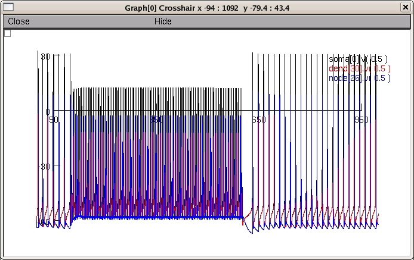

This is the readme for the model associated with the paper: Johnson MD and McIntyre CC. (2008) "Quantifying the neural elements activated and inhibited by globus pallidus deep brain stimulation." J Neurophys. Model files for two types of non-human primate neurons used in the paper: simplified versions of 1) a GPi neuron and 2) a GPe axon collateralizing in GPi en route to STN. Additional files for simulating the response of these cells to deep brain stimulation can be requested by contacting the authors. GPi neuron model (implemented from tracing in Fig4, Parent2001, J Comp Neurol) GPe axon model (implemented from tracing in Fig5, Sato2000 J Comp Neurol) Questions on the model, please contact Matt Johnson (johnsom11@ccf.org) Example Use: ------------ Check that you have NEURON installed (available from http://www.neuron.yale.edu). Autolaunch from ModelDB **or** download and expand the archive and compile the mod files to run under ... linux/unix ---------- by typing nrnivmodl GPi_model in the top level (JohnsonMcIntyre2008) directory. Then type nrngui mosinit.hoc mswin ------- Run mknrndll, cd to the expanded directory and then the GPi_model subdirectory, press make nrnmech.dll button. Move the nrnmech.dll file to the top level directory (JohnsonMcIntyre2008). Double click on the mosinit.hoc file (in windows explorer). MAC OS X -------- Drag and drop the GPi_model directory onto the mknrndll icon. Drag and drop the GPi_hocProps.hoc file onto the nrngui icon. This starts the simulation for a point from fig 2C. Once the simulation is running: ------------------------------- Choose one of the first two buttons to either run a demo version (short run) excerpt of figure 2A (right) or an example run from which one point in the curve in figure 2C can be obtained. For the later case (after 13 minutes on 2.8GHz Pent 4) you should see an image that looks like this:  20110524 Ted Carnevale supplied an update for a likely almost never occuring condition. See mod files GPe_model/AXNODE75.mod GPe_model/PARAK75.mod GPi_model/AXNODE75.mod GPe_model/PARAK75.mod for lines on which a minus sign was removed.